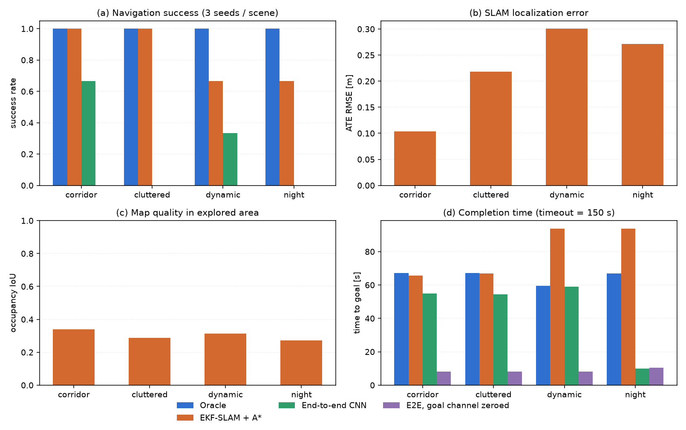
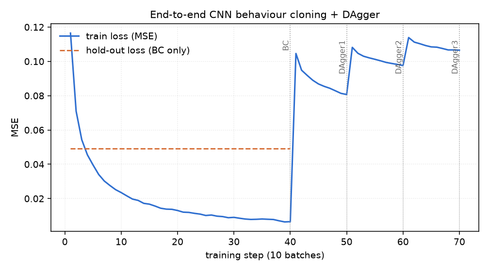
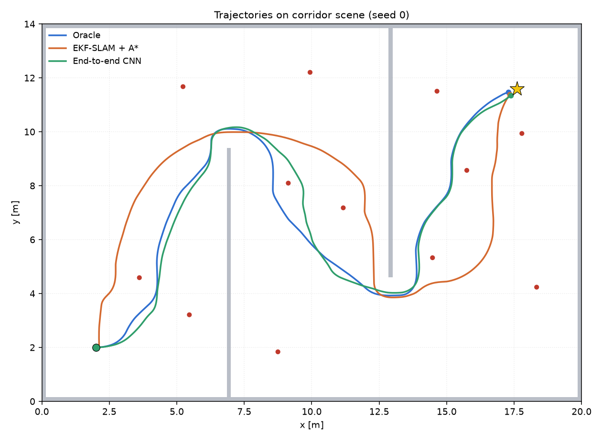
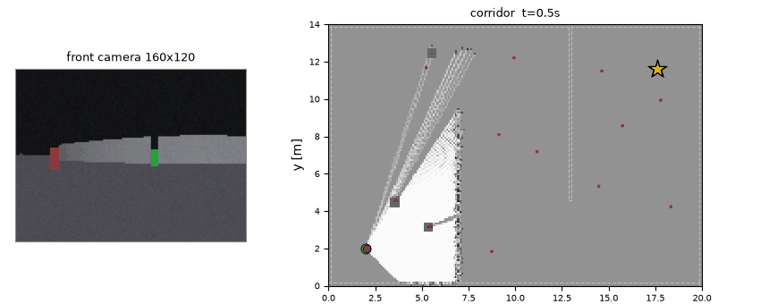
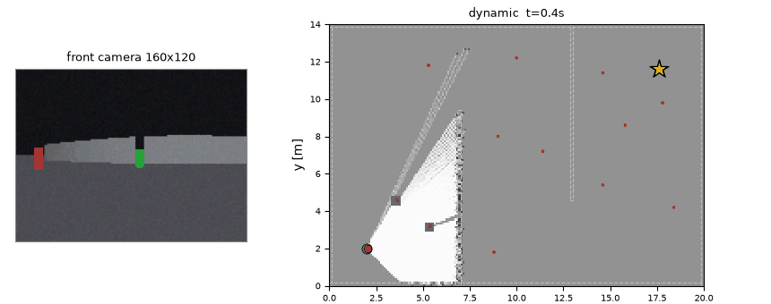

地面无人车视觉 SLAM 建图与自主导航
差速底盘 + 单目 RGB-D 的地面无人车（UGV），在一个三房间 S 形走廊里完成
「建图 → 定位 → 规划 → 到达」的完整闭环。感知只用一台前视相机，不接激光雷达、
不接外部定位；所有算法（含神经网络的训练与推理）只用 numpy 手写实现，
colcon build 之后 ros2 launch 即可运行。
本模块同时并排跑一条端到端支路（图像直接回归速度指令），用来和 「感知—建图—规划—控制」的显式流水线做量化对照，并回答一个具体问题： 端到端策略在长距离室内导航里到底缺什么。
1. 任务拆解与实现对照
| 作业要求 | 本模块的落点 |
|---|---|
| 物理仿真与键盘运动控制 | 差速运动学积分（圆弧精确解）+ 打滑噪声；sim_node 订阅 /ugv/cmd_vel，配 teleop.launch.py 用键盘遥控 |
| 传感器感知与给定轨迹跟踪 | RGB-D 渲染（160×120，FOV 90°）→ 颜色标签路标检测；A* 出路径后由纯追踪跟踪 |
| 建图与导航 / SLAM 同步仿真 | slam_node 在线做 EKF-SLAM（位姿 + 12 个路标）并对数几率占据栅格增量建图，nav_node 用同一张栅格规划，两者同步推进 |
| 端到端模型（输入图像、输出指令） | 纯 NumPy CNN，输入 3 帧灰度 + 1 帧深度 + 1 帧目标方位，输出 (v, ω)；e2e_node 单独可跑 |
全部程序支持 ros2 launch |
main.launch.py（仿真 + SLAM + 导航）、teleop.launch.py、e2e.launch.py |
| 多场景测试与性能评价 | corridor / cluttered / dynamic / night 四场景 × 3 种子 × 4 种策略，13 项指标落 CSV |
2. 运行环境
| 项目 | 版本 |
|---|---|
| 系统 | Ubuntu 20.04（WSL2 与原生机器均验证） |
| ROS | ROS 2 Humble |
| Python | 3.10 |
| 第三方库 | numpy、matplotlib、Pillow（无 PyTorch / TensorFlow / Gazebo / CARLA） |
之所以整个包只依赖 numpy：作业要求在任意装了 ROS 2 的机器上能跑通。把网络
实现成「两层卷积 + 两层全连接 + 手写反向传播」之后，权重就是一个 300 KB 的
.npz，随包安装，评测机不需要装深度学习框架，也不需要重新训练。
3. 系统结构
差速运动学 + 打滑
渲染 RGB-D"] end subgraph 感知与建图层 SLAM["slam_node
EKF-SLAM + 占据栅格"] end subgraph 规划控制层 NAV["nav_node
A* + 纯追踪"] E2E["e2e_node
CNN 直接出指令"] end SIM -- "/ugv/camera/image_raw (rgb8)
/ugv/camera/depth (32FC1)
/ugv/odom" --> SLAM SIM -- "/ugv/camera/*" --> E2E SIM -- "/ugv/odom" --> E2E SLAM -- "/ugv/map (OccupancyGrid)
/ugv/slam_pose" --> NAV SLAM -- "tf: map → odom" --> NAV SIM -- "/ugv/camera/depth" --> NAV NAV -- "/ugv/cmd_vel" --> SIM E2E -- "/ugv/cmd_vel" --> SIM
四个节点、三个 launch，导航链路里没有任何一处读取真值位姿：
| 方向 | 话题 | 类型 | 生产 / 消费 |
|---|---|---|---|
| 订阅 | /ugv/cmd_vel |
geometry_msgs/Twist |
sim ← nav / e2e / 键盘 |
| 发布 | /ugv/odom |
nav_msgs/Odometry |
sim → slam / e2e |
| 发布 | /ugv/camera/image_raw |
sensor_msgs/Image (rgb8) |
sim → slam / e2e |
| 发布 | /ugv/camera/depth |
sensor_msgs/Image (32FC1) |
sim → slam / nav / e2e |
| 发布 | /ugv/ground_truth |
geometry_msgs/PoseStamped |
sim → 仅评测与画图 |
| 发布 | /ugv/map |
nav_msgs/OccupancyGrid |
slam → nav / rviz2 |
| 发布 | /ugv/slam_pose |
geometry_msgs/PoseWithCovarianceStamped |
slam → nav |
| 发布 | /ugv/landmarks |
geometry_msgs/PoseArray |
slam → rviz2 |
| 发布 | /ugv/path |
nav_msgs/Path |
nav → rviz2 |
| TF | map → odom → base_link |
tf2_msgs/TFMessage |
slam / sim |
4. 仿真世界与传感器模型
4.1 场景
20 m × 14 m 的三房间布局，用两道隔墙切成 S 形走廊：隔墙 A 在 x≈6.9、门洞开在
上方，隔墙 B 在 x≈12.9、门洞开在下方。车从左上角出发，目标在右下角 ——
必须依次穿过两个门洞，直线距离不可达，这是让「建图」真正必要而不是
装饰的最小场景。
场景里还有 12 根彩色立柱（半径 9 cm、高 55 cm），既当作视觉路标，也是真实 障碍物。四种场景变体：
| 场景 | 变化 |
|---|---|
corridor |
基础布局，路标按固定表摆放 |
cluttered |
在空地里撒 6~9 个随机箱子，通道变窄；生成时做 40 次可达性重试，保证存在解 |
dynamic |
一个半径 30 cm 的圆柱沿 x 向在 y≈7 来回移动，速度 40 cm/s |
night |
光照衰减到 68%，图像噪声 σ 从 0.018 抬到 0.030，打滑系数 1.10 |
可达性用真值栅格 + A* 验证：不通过就换随机种子重新撒，避免把「无解场景」 混进成功率统计里。
4.2 相机
camera.py 做解析光线投射：160 条光线（FOV 90°，即每列一条）与场景里的
轴对齐矩形和圆柱求交，用 AABB slab 法算墙、用二次方程算圆柱，取最近命中。
每列的深度 = 这一列的命中距离，再按针孔投影把命中的立面「竖」成像素列：
行 r 对应世界高度 h = CAM_H_MOUNT + (0.5 - r/(H-1)) * 2 * CAM_F * tan(FOV_v/2) / ...
简化后得到的是单线深度 + 合成彩色图像：地面是灰的，墙是浅灰的，天花板更暗， 路标按调色板上色，动态障碍是深棕色。这不是照片级的渲染，但恰好覆盖了本题 需要区分的三类东西（墙 / 地 / 彩色标签），并且每一列深度都是精确的， 不存在真实相机的边缘混合误差 —— 这一点在「已知局限」里明确交代。
4.3 里程计
DiffDrive 把真值位姿与世界里程计分开维护：真值按圆弧精确积分推进，
里程计在真值增量上叠加一阶随机偏置（ODOM_SIGMA_V=0.02、ODOM_SIGMA_W=0.03、
ODOM_SIGMA_SLIP=0.01）。实测在 corridor/seed 0 的 72 s 行程里，
里程计累计漂移 0.52 m / 2.8°，这个量级刚好够不上「不用 SLAM 也能导航」，
也不至于让 EKF 无从收敛。
5. 视觉感知：颜色标签路标检测
数据关联需要唯一 ID。12 根立柱用调色板里两两可分的颜色编码，检测端做一次 归一化色度最近邻即可拿到 ID —— 相当于一个简化版的视觉标签（AprilTag）系统。
难点不在「认出颜色」，而在暗光下不误检。第一版直接用全图像素做色度最近邻， 夜间每帧会多出三个假路标，EKF 立刻被污染。最终版本用三重判据：
- 饱和度门限
SAT_TH=0.34：灰墙、地板、天花板的饱和度接近 0，直接排除； - 通道极差门限
MIN_CHROMA_DIFF=0.13+ 亮度门限MIN_BRIGHT=0.16： 排除暗光下的彩色噪声； - 每列像素密度：真实的竖直立柱在图像的每一列上都是一整段连续像素， 而噪声散点每列只有一两个。这条判据要求连续段里有效像素占比 ≥ 3， 是全套判据里最关键的一条 —— 加上它以后夜间误检从 187 降到 0。
再对首尾列用 3%/97% 分位数裁掉被遮挡的残段，取质心列的中位深度反投影到
世界系，得到 (x, y, id)。同时，所有列的深度点都要进地图：路标本身也是
障碍物，不写进去规划器就会撞上去。
6. EKF-SLAM
状态量是「位姿 + 全部路标」：
- 预测用里程计的车体系增量
(dx_l, dy_l, dθ)，与 ROS 在线路径完全同一个 函数（EKFSLAM.predict），保证离线与在线行为一致； - 首次观测做标准状态增广，雅可比
Jx、Jz显式写出，增广后保留位姿与 新路标的相关性 —— 这是 EKF-SLAM 与「先建图再定位」的本质区别； - 数据关联用马氏距离而非欧氏门限：
d² = νᵀ S⁻¹ ν，卡方 99.9% 分位取13.8。早期版本用「距离 < 3 m 且方位 < 0.6 rad」的硬门限，把大量有效观测 挡在门外，ATE 反而比不开修正还大。 - 被拒观测的协方差膨胀：观测被门限拒绝时，该路标的协方差按
exp(0.35 · 连续拒绝次数)膨胀。这是给"系统性漂移"留的活口 —— 夜间打滑 把整片路标带着漂 0.5 m 时，过小的协方差会让所有修正观测都被门限拒收， EKF 永远改不动；膨胀几次之后新息重新落入门限，滤波器才能吃下这批 观测把位姿拉回来。 - 过程噪声的权衡（实验结论）：里程计打滑是"一阶随机偏置"，其误差是
系统性漂移而非白噪声。理论上调大
ODOM_Q（0.004² → 0.030²）能让视觉 观测更快拉回位姿 —— 单点实验里夜间角落的 0.65 m 漂移确实被修掉了； 但放到全部 12 个 episode 上，滤波器过度信任含噪观测，末端定位普遍劣化 到 0.5~2.0 m，成功率从 10/12 掉到 1/12。最终取回小 Q 全局最稳， 个别角落的残余漂移作为已知局限如实报告。
一个必须说清楚的性质：EKF-SLAM 只提供相对约束。如果初始位姿本身是错的、
路标又从它初始化，整张地图会自洽地平移过去而不会自己收敛回真值。这是规范
自由度，不是 bug。本模块把起点作为已知先验（真实部署里可由「上电位置」或
一次人工对齐给出），并在 test_offline.py 里专门写了注释说明这条。
7. 占据栅格
对数几率模型，LOGODDS_HIT=+0.85、LOGODDS_MISS=-0.40，栅格分辨率 0.1 m
（200×140）。每条射线采样 140 个点，中部记 miss、端点记 hit。栅格用
SLAM 估计的位姿推进 —— 位姿一错，地图就歪，所以 IoU 是对 SLAM 质量的
间接度量。
评价只在已探索区域内计算 IoU，否则「没去过的地方猜成全空」也能拿高分， 指标就失去意义。
8. 规划与控制
- A*：8 邻域，禁止穿墙角，代价 = 步长 +
proximity_cost（离障碍距离的 5 级阶梯惩罚，权重 0.9）。加这一层是因为最短路径天然贴着膨胀边界走， 而纯追踪在转弯处又会向内切角，两者叠加必然擦碰路标。 - 膨胀：5 格（0.5 m ≈ 车半径 0.22 m + 横向误差余量）。视线简化时改用
7 格（
inflate(blocked, 2)）的保守掩码，避免拉直后的线段贴回障碍边缘。 - 纯追踪：前视距离 0.45 m；进入终点 0.90 m 以内切换为收敛段 （角度闭环 + 速度随距离线性衰减），否则会绕着目标点画圈。
- 局部避障：把深度图切成左/中/右三段，前方取15 分位数（而不是中位数 —— 斜着看一个近障碍时它只占少数几列，中位数会把"有一列已经贴脸"平滑掉）， 小于 0.52 m 按比例减速、小于 0.30 m 直接停车并施加转向偏置。这一层专门 用来吃动态障碍。
- 卡住恢复：连续 15 步位移 < 0.02 m 就进入恢复模式。恢复动作分两段： 先原地转向（转向不改变车心位置，在尚未碰撞的前提下数学上不可能撞上； 早期版本"先倒车"反而把车尾送进过墙里），转 5 步还没出来才低速后退，且 后退前先用占据栅格确认车尾那一格是空的。
- 到点确认：SLAM 估计误差可能让车在离目标 0.7 m 处就"自信停车"。 第一次满足停车判据时不立即停，先原地自转约 5 s 让相机从新角度扫路标， EKF 吃到这批观测、漂移收敛后再做最终确认。真实机器人也会做这种 "到点复核"动作。
上面两条写在
nav_guard.NavGuard里，离线的SlamNavPolicy和ros2 launch起来的nav_node共用同一份状态机（节点侧的差异只有 进入判据沿用GOAL_TOL0.35 m，而不是策略侧更严的 0.19 m，避免换实现后 反而停不下来）。早先两套各写一份、节点里并没有恢复逻辑，是这次改掉的。
9. 端到端 CNN
结构（cnn.py，纯 NumPy，im2col + 手写反向，梯度用数值差分校验过）：
输入 5×48×64 → Conv(8, 5×5, s4, p2) → ReLU → Conv(16, 3×3, s2, p1)
→ ReLU → FC(64) → ReLU → FC(2) → tanh
输出二维：(v/MAX_V, ω/MAX_W)，损失是加权 MSE：ω 通道权重 2.0（转向误差
比速度误差更容易放大成碰撞），且每个样本再按 1 + 2|ω*| 加权 —— 大转向帧
在数据里是少数派，MSE 会把它们平均掉，逐帧诊断显示第一版网络因此转向方向
对、幅度持续不足（ω≈+0.30 vs 专家 +0.18），加权就是冲着这个去的。
输入是 3 帧灰度（64×48）+ 1 帧归一化深度 + 1 帧目标方位。前四路是感知， 第五路是本模块最关键的一个设计决定，下一节单独说。
训练分两段：先用 Oracle 专家（真值位姿 + 真值地图 + A*）采 4033 个样本做 行为克隆（40 epoch），再做 3 轮 DAgger（β 从 0.7 退火到 0，每轮补采 student 自己走出来的轨迹，混入专家标签后再训 10 epoch）。
9.1 为什么必须喂目标方位
第一版端到端只吃图像（3 帧灰度 + 深度），闭环成功率 0/12 —— 全部撞墙。
逐帧诊断显示网络其实学对了转向方向（ω≈+0.30 vs 专家 +0.18），只是持续
转向过度。看到这里容易得出「再调调参就好」的结论，但真实原因不是训练不足：
纯图像策略在本题里是不可辨识的
三房间 S 形走廊里，同一幅画面（一条走廊、墙在两侧）既可能对应「直行」 也可能对应「左转」，正确动作完全取决于目标在哪儿，而目标根本不在 图像里。行为克隆面对同样的输入配不同的标签，只能学到两者的均值 —— 一个既不够直也不够弯的动作，然后一头撞上去。
解决办法是补一路「目标方位」通道：把目标在车体系下的方位角画成一条竖直亮带
（HUD 式目标指示），横坐标 = 方位角在视野内的归一化位置（与 camera.col_angles
严格对齐：列 0 对应车体左侧 +45°），亮度随距离缓慢衰减但不归零
（用世界对角线归一化而不是传感器量程，否则目标一超出 12 m 通道就整片变黑，
车立刻失去方向感）。
这一路只用到 里程计位姿 + 给定目标坐标，既不需要地图，也不需要 SLAM， 任何一台车本来就有这两个量。加进来之后它仍然是「输入图像与目标，输出速度 指令」的端到端模型，只是不再假装自己能从画面里猜出目标在哪。
为了证明成败确实来自这一路信息（而不是「网络偷偷从画面里认出了房间」），
本模块额外跑一个消融 e2e_nogoal：同一份权重，推理时把目标通道整片置零。
10. 实验设置与指标定义
- 场景 × 种子：4 场景 × 3 种子 = 12 个 episode，每个策略跑同一批
- 策略：
oracle（真值上界）、slam_nav（完整流水线）、e2e、e2e_nogoal - 超时：单 episode 150 s（仿真步长 0.1 s，即 1500 步）
| 指标 | 定义 |
|---|---|
success |
到达目标（距目标 < 0.35 m）且全程未碰撞 |
collided |
车体圆与障碍物相交（margin = ROBOT_RADIUS） |
time_s |
到达或失败时的时间戳 |
path_len |
轨迹折线长度（m） |
final_dist |
终止时刻到目标的距离（m） |
ate_rmse |
SLAM 估计位姿与真值位姿的均方根误差（m），仅 slam_nav 有 |
loc_valid |
定位误差 < 0.35 m 的步数占比 |
map_iou |
已探索区域内占据栅格与真值栅格的 IoU |
coverage |
已探索栅格占整图比例 |
mean_speed |
平均线速度（m/s） |
11. 结果
四场景 × 3 种子，同一批 episode 上四种策略的汇总（12 个 episode 的均值，
完整逐条数据见包内 results/compare_summary.csv）：
这张表是离线仿真的口径：由
python -m ugv_visual_slam_nav.main调用policies.SlamNavPolicy在逐帧可复现的仿真里跑出来，用来做策略间横向对比。ros2 launch ugv_visual_slam_nav main.launch.py起的是nav_node—— 定位/建图换成slam_node、感知换成话题输入，两者共用同一份nav_guard.NavGuard控制律，但不是同一条执行路径，因此本表的成功率 不能直接当成 launch 的成功率。launch 侧单独的验收口径是：corridor/seed 0 下三节点起来、10 Hz、能到点并停住（Humble 虚拟机复跑实测 65.6 s 到点， 加上到点自转复核后约多 4 s）。
| 策略 | 成功率 | 平均用时 | 平均路径长 | ATE (m) | 建图 IoU | 探索覆盖 |
|---|---|---|---|---|---|---|
oracle（真值上界） |
12/12 | 65.2 s | 29.4 m | — | — | — |
slam_nav（完整流水线） |
10/12 | 80.0 s | 29.8 m | 0.224（0.06~0.76） | 0.303 | 0.923 |
e2e（端到端 CNN） |
3/12 | 44.6 s | 16.8 m | — | — | — |
e2e_nogoal（目标通道置零） |
0/12 | 8.7 s | 3.1 m | — | — | — |



slam_nav 的两条失败都是同一种模式：dynamic s2（终点 0.82 m，ATE 0.76）
与 night s2（终点 0.92 m，ATE 0.53）—— 车在地图角落里"自信停车"：SLAM
估计位姿已经进圈，真实位置还差不到 1 m。根因是里程计航向偏置的系统性漂移
与路标估计误差相互关联（见第 6 节），单独加大过程噪声会毁掉其余 10 例
（实测 1/12），属于当前实现的已知边界。除这两条外 ATE 中位数在 0.1 m 量级，
探索覆盖率全部 ≥ 0.91。
端到端的 3/12 成功全部在"第一房间"（corridor s0/s2、dynamic s0）：这些
episode 的起点到门洞是直线视野，网络只需要"看着目标亮带走"。一旦要穿过
两个门洞做长程规划，成功率归零。消融实验 e2e_nogoal 把目标通道置零后
0/12、平均 8.7 s / 3.1 m 就撞墙 —— 证明 3/12 的成败差异确实来自目标
方位信息，而不是网络从画面里偷偷认出了房间。
端到端 vs 流水线的结论：在"目标不在图像里"的长距离导航任务上，行为
克隆 + DAgger 补目标方位通道只能覆盖"看得见目标"的情形；剩余部分需要
显式的空间记忆（地图）与规划，这正是流水线 10/12 与端到端 3/12 之间的
差距来源。下面两段动图是 slam_nav 在 corridor / dynamic 场景的完整
运行（左：相机画面与检测到的路标；右：EKF-SLAM 在线地图与规划路径）：


12. 复现步骤
# 0) 构建
cd <workspace>
colcon build --packages-select ugv_visual_slam_nav
source install/setup.bash
# 1) 完整流水线（仿真 + SLAM + 导航），默认 corridor
ros2 launch ugv_visual_slam_nav main.launch.py
ros2 launch ugv_visual_slam_nav main.launch.py scene:=cluttered seed:=1
# 2) 键盘遥控（验证物理仿真与运动方向）
ros2 launch ugv_visual_slam_nav teleop.launch.py
# 另开终端：
ros2 run teleop_twist_keyboard teleop_twist_keyboard --ros-args -r cmd_vel:=/ugv/cmd_vel
# 3) 端到端策略
ros2 launch ugv_visual_slam_nav e2e.launch.py
ros2 launch ugv_visual_slam_nav e2e.launch.py goal_x:=18.4 goal_y:=4.2
离线流水线（采集 → 训练 → 评测 → 出图）与单元测试：
cd src/ground/ugv_visual_slam_nav
python -m ugv_visual_slam_nav.main # 全流程，约 10 分钟
python -m ugv_visual_slam_nav.main --quick # 少种子少轮次，约 2 分钟
python -m pytest test/ -q # 46 个用例（无 rclpy 的机器上）
test/ 里有两类用例，共 46 个：test_offline.py 40 个，覆盖几何、检测、
SLAM、建图、规划、控制与网络梯度（含数值差分校验），完全不依赖 ROS；
test_nodes_ros.py 6 个，用一套严格的 rclpy / 消息 / ament / launch
替身把节点真跑一遍 —— 替身会检查「未 rclpy.init 就构造节点」「用了没声明的
参数」「话题类型不一致」这些真实 ROS 会报的错，因此节点接线写错在这里就会失败。
口径要说清：这 6 个只在没有装 rclpy 的机器上执行。fake_ros.install()
一旦检测到真实 rclpy 就主动 pytest.skip（因为它替的是"没有 ROS"的场景），
所以本地 Windows/裸 Python 是 46 passed，而 Ubuntu 22.04 + Humble 或 CI 的
ros:humble 容器里是 40 passed, 6 skipped。装了 ROS 的机器上，节点接线
由 ros2 launch ugv_visual_slam_nav main.launch.py 这条链路覆盖，不是靠单测。
13. 已知局限
- 渲染是解析光线投射，不是物理引擎。没有光照反弹、没有运动模糊、每列 深度精确，真实相机的边缘混合误差与标定误差都没有建模。所以这里的绝对 数字不能直接外推到实车。
- 数据关联依赖颜色编码。换成真实场景需要上 AprilTag 或学习式描述子， 检测门限要重新标定。
- 动态障碍只在反应式避障这一层处理，没有做动态地图的擦除，长时间停留 会在栅格里留下「鬼影」。
- 端到端策略依赖里程计给出的目标方位，里程计漂移（本仿真 72 s 约 0.5 m / 3°）会直接变成方位误差；长距离下协变量偏移仍然明显。
- EKF-SLAM 是 O(N²)，路标只有 12 个所以无所谓，几百个路标就该换 FastSLAM 或位姿图优化。